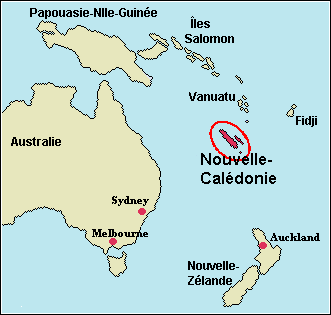
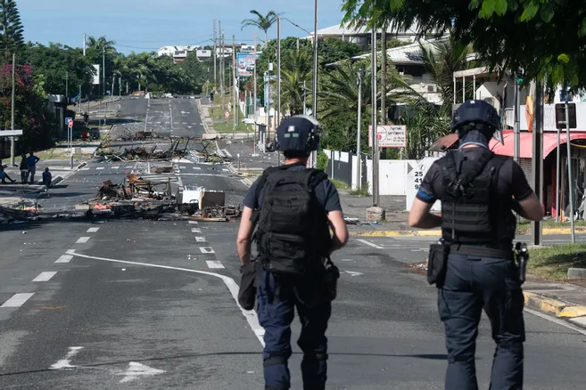

La Situation en Nouvelle Calédonie

Nouvelle-Calédonie, un territoire Français qui se trouve dans l'océan pacifique sud, regard en face une situation grave. Les problèmes sont à la fois économiques et politiques.
La question politique:
En Nouvelle-Calédonie il éxiste une mélange de griefs historiques, mouvements d'indépendance, et défis socio-économiques. Ce n'est aussi pas faux de dire que les problèmes de Nouvelle-Calédonie sont fondées sur l'héritage colonial et d'ambitions d'autodétermination.
Les peuples Kanaks, la population indigène de Nouvelle-Caléndonie, ont longtemps cherché à obtenir l'indépendance de la France, en raison de leur marginalisation historique et de leur désir d'une plus grande autonomie. Cette tension s'est manifestée par une myriade de conflits politiques et de référendums. L'Accord de Nouméa (1998) était un accord historique qui devait fournisser un cadre pour une autonomie accrue et une voie vers l'indépendance. Cependant, l'implimentation de l'Accord a été retardé et dévié, quelque chose qui a contribué à la fracture politique et au ressentiment qui perdurent aujourd'hui. La Nouvelle-Calédonie a voté contre l'indépendance en 2018, 2020 et 2021 lors de trois référendums convenus entre Paris et Nouméa, mais la résistance locale à la domination française demeure. Le mouvement indépendantiste a dénoncé les « tactiques coloniales » de la France après que plusieurs militants ont été transférés en France métropolitaine pour y être jugés. Le mois d'Août 2024 meme a vu couvre-feux nocturnes et le déploiement de 3 000 agents de sécurité pour tenter d'endiguer les troubles actuelles. C'est claire que la méfiance et ressentiment vers les suzerians coloniaux sont profondes, et la situation n'est pas aidé par la situation économique.
La question économique:
La situation politique est empirée par la dramatique situation économique du territoire. Plus de 15 % de leur PIB est fournissé par la France et la distribution des revenus est très inégale, l'industrie de tourism est sous-développé avec que 100.000 chaque année, et l'exploitation de nickel forme 93 % des exportations. De plus, la population viellit et 17 % des ménages vivent sous le seuil de pauvreté. Le territoire a des difficultés avec la développement de nouveaux sectuers et de nouvelles industries, et la situation est si pauvre qu'en 2023 l'État a ratifié un nouveau paquet d'aides financières d'un montant total de €37 million. Quelques analystes de sécurité suggérent qu'une guerre civil n'est pas hors d'imagination.
Un plus grand jeu se prépare:
Pourquoi donc est-ce que la France continue a maintenir ce territoire situé à 18.000km de l'Île de France? C'est tout dans le nickel. Nouvelle-Calédonie répresent 8% des réserves globales de nickel – c'est numéro quatre sur la liste, derrière seulement Australie, Brésil, et Russie. C'est petit archipel joue dans la cour des grands. Et c'est ici que la monde de le géopolitique émerge. Nouvelle-Calédonie est donc un atout considérable pour la République, en particulier avec les requins chinois que cercle. La Chine continue de projeter son influence dans le pacifique sud. Ce pays veut bien sûr les réserves de nickel – intégrale pour la fabrication de batteries de voitures électriques – mais la location géographique de Nouvelle-Calédonie et aussi importante. « Une Nouvelle-Calédonie indépendante tomberait de facto dans la sphère d’influence chinoise comme avant elle le Vanuatu et d’autres territoires du Pacifique.» (Europe1). Avec la distance entre l'Île de France et Nouvelle-Calédonie, surtout au 21ième siècle, les justifications des territoires d'outre-mer font l'objet d'un examen de plus en plus minutieux. Que doit faire la France, ou bien le monde occidental, alors qu'il devient de plus en plus difficile de projeter la puissance si loin de chez soi? Est-ce que les intérêts économiques vont toujours pouvoir excuser une maltraitance d'une peuple d'un territoire insulaire?
